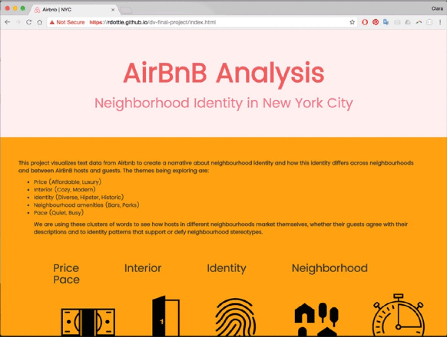
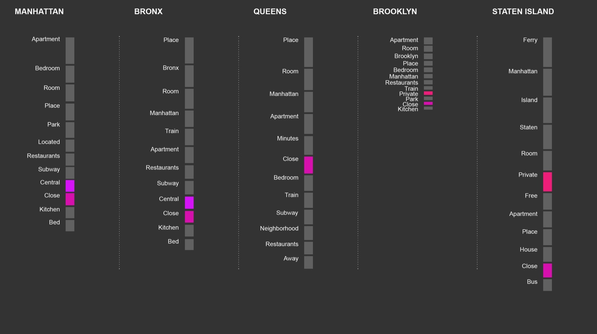
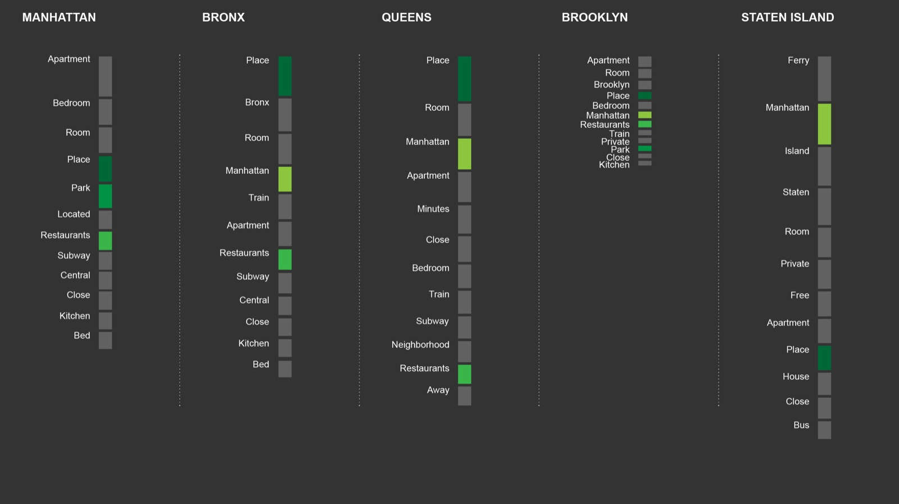
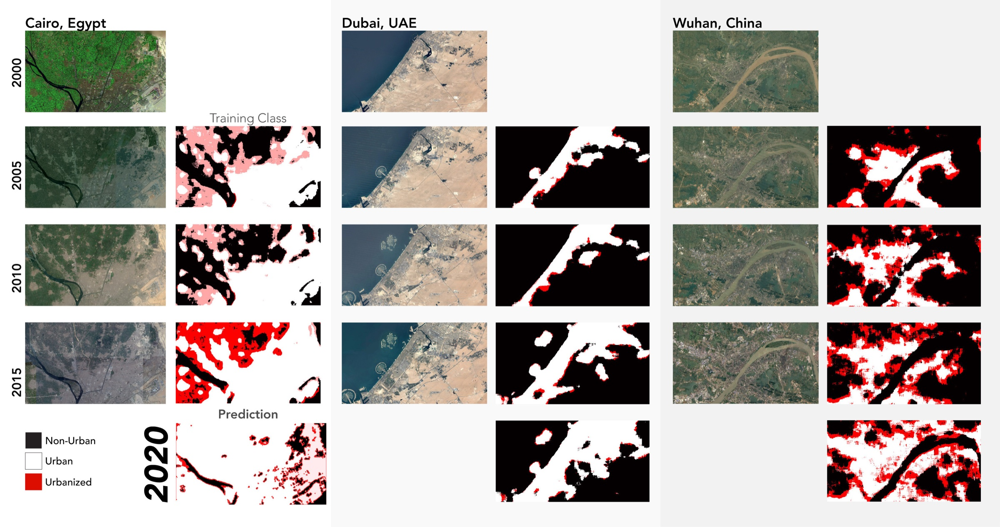

Airbnb analysis
Hosts and guests use the same platform but talk about neighborhoods differently. This project mined Airbnb listings and reviews across New York to map the difference.

01The problem
A neighborhood’s identity is partly marketing. Hosts describe where they list, guests describe where they stayed. Do they agree?
02The work
Text from guest reviews and host listings across the five boroughs, mined and grouped by theme, then mapped by borough and by word.


03The result
An interactive site that maps the words each group uses most, with word associations by theme. Made with Rachael Dottle, Eric Wong, Clara Dykstra and Andreea Seusan, for Juan Saldarriaga’s data visualization course.
Predicting urban sprawl

Say hello.
Working on something for the built environment? I’d love to hear about it.